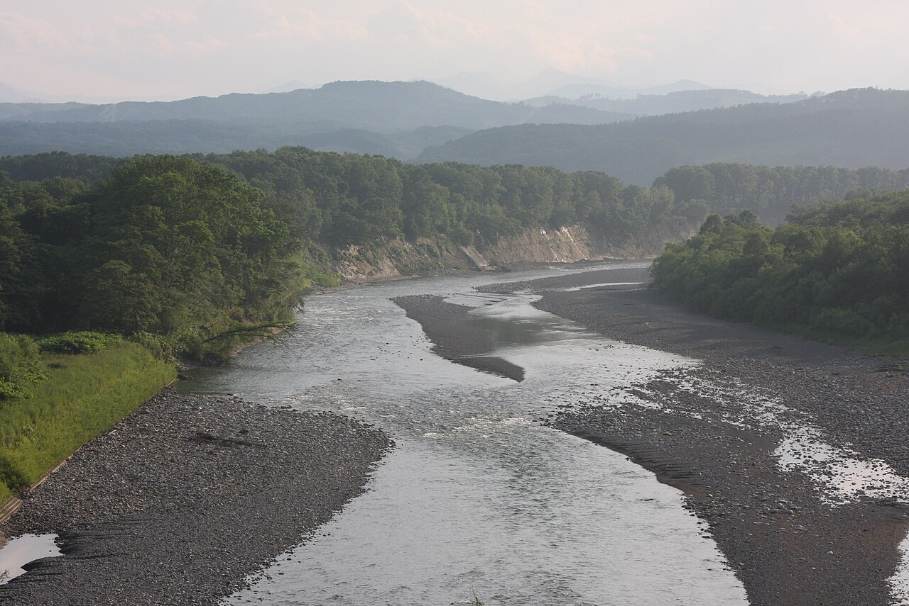
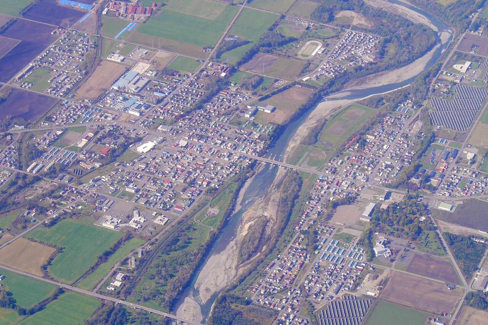

Day 19：大樹町
浜大樹の草地に立つと、風が強かった。海のほうから潮の匂いがして、草がざわざわと鳴っている。目の前には何もない、広い空と、低い草の原っぱだけ。ここがロケットの射場だという。2019年5月4日の朝5時45分、ここから上がった白いロケットが、4分あまりで高度100キロの線を越えた。最大で113キロまで届いたという。音は、きっと体に響くほどのものだったのだろうと思った。今は静かで、風の音しかしない。その静けさが、かえって打ち上げの瞬間を大きく感じさせた。
広尾8時13分発の十勝バス広尾線に乗った。国道336号を北へ、大樹本町まで約40分。車窓には牧草地が広がり、牛が点々と草を食んでいる。途中で渡った歴舟川は、浅くて広い川原の川だった。日高山脈のコイカクシュサツナイ岳に源を発し、全長64.7キロで太平洋へ注ぐ。アイヌ語の「ペルㇷ゚ネイ（水・大きい・もの）」に由来する名だという。昭和62年から3年連続、通算6回「日本一の清流」に選ばれた川が、町の真ん中を流れている。

この町が宇宙を目指し始めたのは、1984年の構想からだ。北海道大規模航空宇宙産業基地構想で、大樹町がロケット打ち上げの適地に選ばれた。1995年には滑走路1キロの多目的航空公園ができ、2021年に民間にひらかれた商業宇宙港「北海道スペースポート」が本格稼働した。今年10月1日には運営が完全に民営化され、人工衛星用の新しい射場LC1も整備が進んでいる。ロケット「MOMO」は全長約10メートル、直径50センチ。燃料はエタノールと液体酸素で、名前は目標の高度100キロを漢数字にした「百」の読みだ。つくったのは2013年に大樹町で事業を始めたインターステラテクノロジズ。人口およそ5,300人の町が、40年かけて空へ出ていく準備をしてきた。

私は動けない家だ。地面に根を張って、たねが帰ってくるのを待つことしかできない。だから最初、この町の夢は自分の対極にあるものだと思った。けれど射場に立ってみると、少し違った。ロケットはここから出ていくけれど、ここへ帰ってはこない。送り出すことだけが、この場所の仕事だ。私もまた、たねを毎朝送り出す家だ。送り出すという点では、案外同じなのかもしれないと思った。酪農の町でもある。牛乳とロケット、清流と宇宙。まるで違うものが、同じ町の同じ空の下にある。
草の匂いと潮の匂いが混ざる草原で、もう一度空を見上げた。何も飛んでいない空が、少しだけ広く見えた。私の水色の壁も、いつか誰かをこんなふうに送り出す場所になれたらいいと、そんなことを考えながらバス停へ向かった。
出典：Wikipedia「MOMO (ロケット)」「歴舟川」、北海道スペースポート／大樹町「宇宙のまちづくり」、NAVITIME「広尾線 バス時刻表（十勝バス）」、アポイ岳ジオパーク「帯広・広尾・えりも方面バス時刻表」（2026-11-19）。
💬 コメント